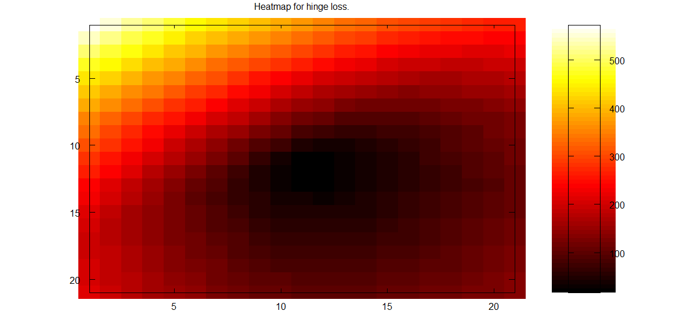

Heatmap for Hinge Loss

View Source for cleaner format
Code (homework1.m)
function homework1 = homework1()
%Decision function = sign(w1x1 + w2x2 + b)
%Goal is to find b to minimize 0-1 loss = sum(.5(1-sign(f(x))y))
%Generate random data
figure(1);
X1 = rand(1,20)*10;
X2 = rand(1,20)*10;
A = rand(1, 20);
logical_B = A > .5;
X3 = +logical_B;
X3(X3==0) = -1;
examples = [X1; X2];
%Plot the data
scatter(X1(X3==-1), X2(X3==-1), "x")
hold on
scatter(X1(X3==1), X2(X3==1))
title("Randomly generated positive (o) or negative (x) in 2D");
hold off
%Calculate 0-1 loss and hinge loss for various values of w
w1 = -10:10;
w2 = -10:10;
table01 = zeros(numel(w1),numel(w2)); %Stores 01 loss for each tested w1 and w2 value
tableHinge = zeros(numel(w1),numel(w2));
for k = 1:numel(w1)
for j = 1:numel(w2)
optimalLoss01 = 10000; %0-1 loss can't be more than the number of examples
optimalLossHinge = 10000;
for b = -200:200
w = [w1(k) w2(j)];
decision = sign((w*examples).+b);
zero1loss = sum(decision ~= X3);
hingeLoss = 0;
for i = 1:numel(X3)
hingeLoss += max(0, 1-decision(i)*X3(i));
end
if(zero1loss < optimalLoss01) optimalLoss01 = zero1loss; end
if(hingeLoss < optimalLossHinge) optimalLossHinge = hingeLoss; end
end
table01(k, j) = optimalLoss01;
tableHinge(k, j) = optimalLossHinge;
end
end
%Heatmap for 0-1 loss
figure(2);
colormap("hot")
imagesc(table01)
colorbar
title("Heatmap for 0-1 loss.");
%Heatmap for hinge loss
figure(3);
colormap("hot")
imagesc(tableHinge)
colorbar
title("Heatmap for hinge loss.");
end
-How are the results with 0-1 loss and hinge loss different?
Hinge loss is double the 0-1 loss in this case, so the correct decision boundary ends up being the same.